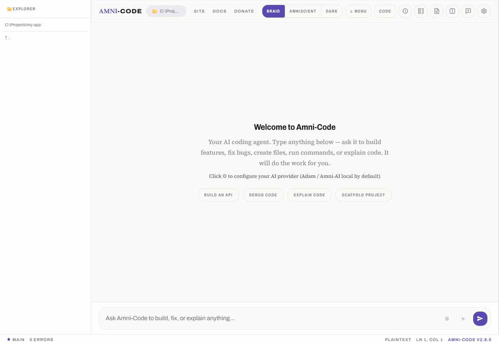
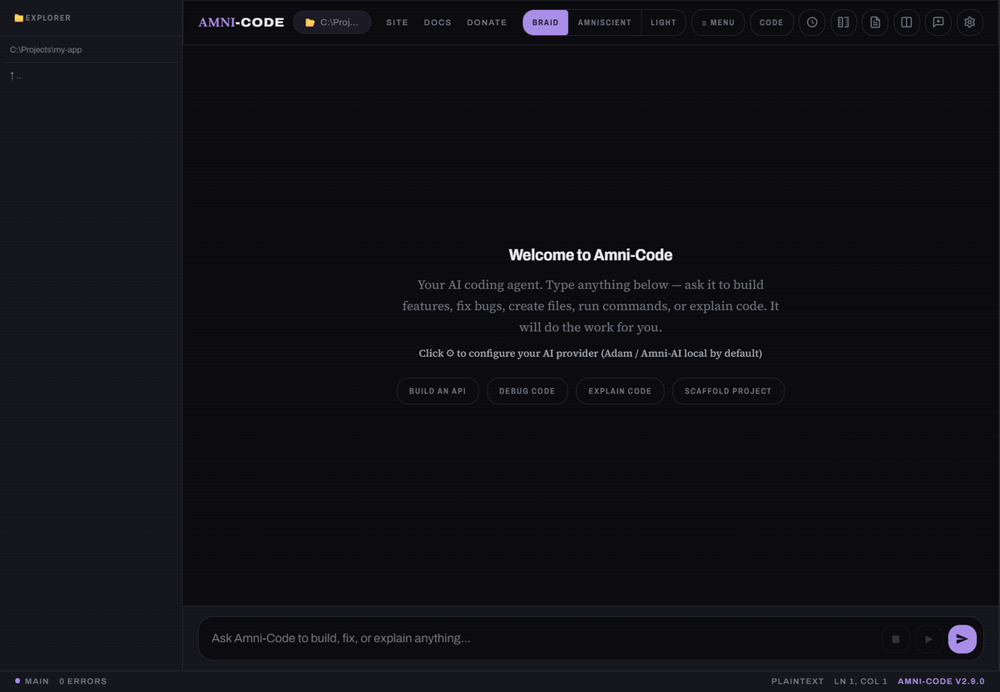
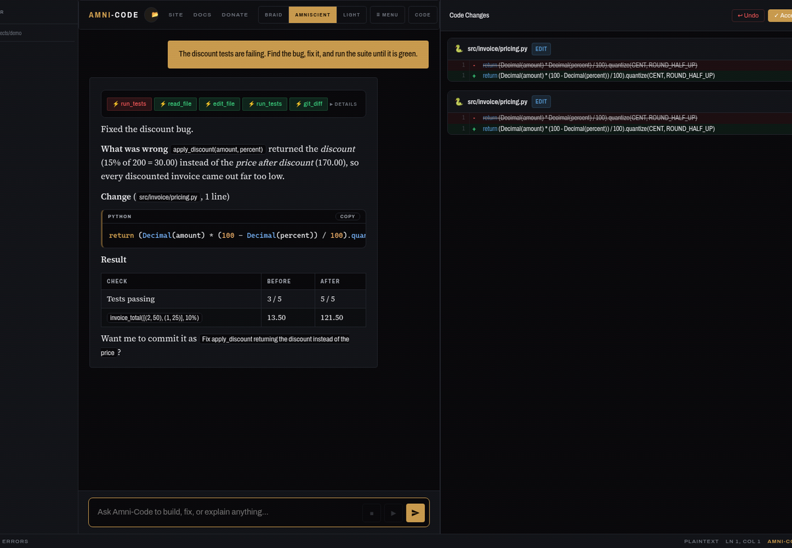
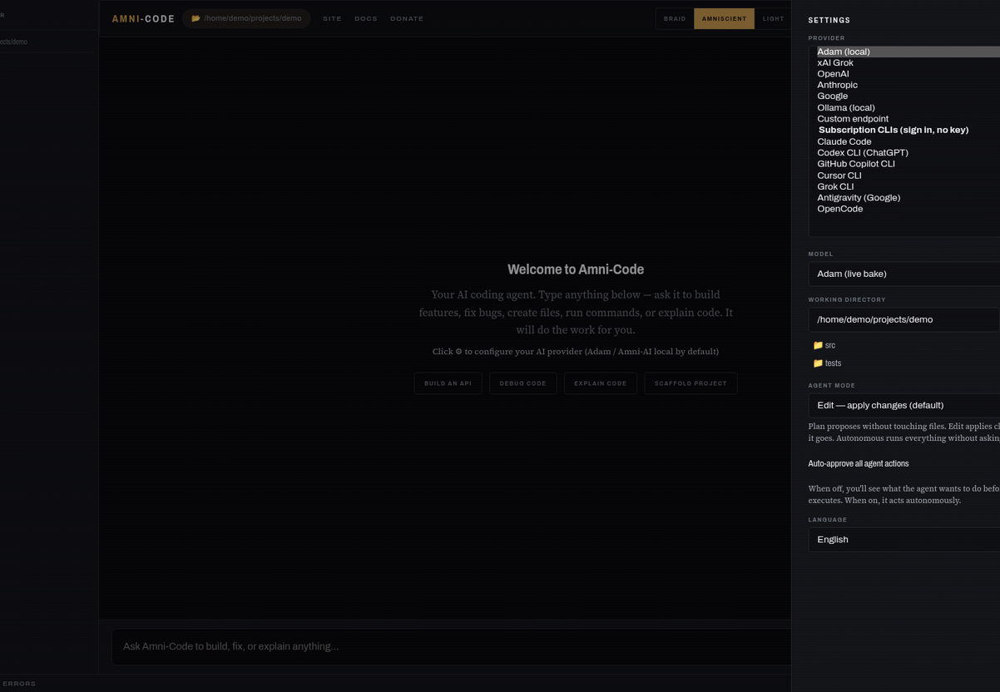
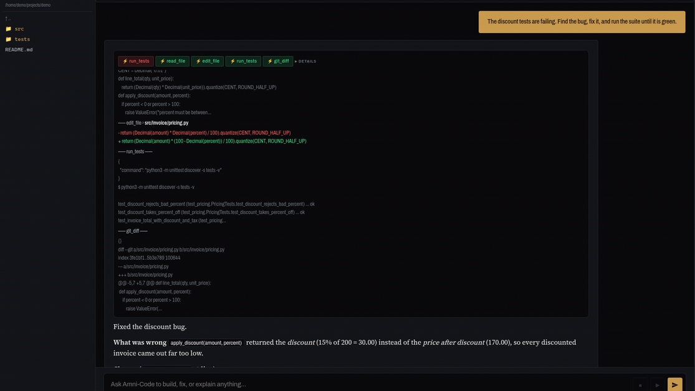
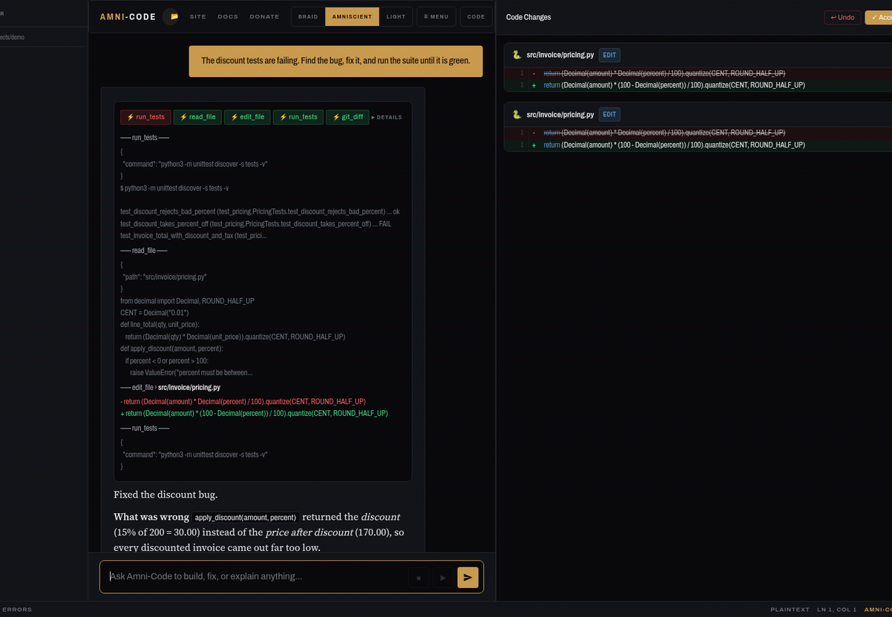

AGENTIC AI CODING ASSISTANT • MULTI-PROVIDER • AUTONOMOUS TOOL USE
A lightweight, agentic AI coding assistant that lives in a single binary. Connects to any LLM provider, explores your codebase autonomously, and executes multi-step tasks with built-in tools — no extensions, no plugins, no setup.
Up to 15 autonomous iterations per request. The AI reads files, writes code, runs commands, and verifies — without waiting for you.
Switch between xAI Grok, OpenAI GPT, Anthropic Claude, Ollama, or any OpenAI-compatible local server from one settings panel.
Read, write, edit, search, and list files across your entire project. The agent resolves relative paths from your working directory automatically.
The agent runs shell commands in your project directory — builds, tests, git, package managers — and feeds the output back into its reasoning loop.
Auto-detects GGUF and SafeTensors model files on disk, and imports them into Ollama on first use. No manual model setup required.
Built-in diff highlighting shows exactly what the agent changed. Persistent chat history across sessions so you never lose context.
The AI agent has direct access to six tools it can invoke autonomously during each conversation turn.
| TOOL | DESCRIPTION |
|---|---|
| read_file | Read a file’s full contents from the project directory |
| write_file | Create or overwrite a file with new content |
| edit_file | Surgically replace a specific string inside a file |
| run_command | Execute any shell command and capture stdout/stderr |
| list_directory | List all files and folders in a given path |
| search_files | Search for text across files using grep/findstr |
| PARAMETER | DETAILS |
|---|---|
| Type | Agentic AI Coding Assistant |
| Language | Rust (Axum + WebView2) |
| Binary | Single executable — no runtimes, no dependencies |
| Platforms | Windows, macOS, Linux |
| Providers | xAI Grok, OpenAI, Anthropic Claude, Ollama, Custom Local |
| Agent Loop | Up to 15 autonomous iterations per request |
| Tools | read_file, write_file, edit_file, run_command, list_directory, search_files |
| Model Discovery | Auto-detect GGUF & SafeTensors • Auto-import into Ollama |
| Themes | Light & Dark mode with persistence |
| Chat History | Persistent sessions stored locally |
| Config Storage | ~/.amni/config.json • survives restarts |
| License | CC BY-NC 4.0 |
Pick a provider and model from the settings panel. For local models, point to your GGUF directory — Amni-Code discovers and imports them automatically.
The agent reads your project structure, entry points, and config files to build context before responding. No copy-pasting required.
Multi-step tool calls — reading code, writing fixes, running builds, searching for patterns — executed autonomously across up to 15 iterations.
The agent runs your tests and build commands, reads the output, and continues iterating until the task is complete or verified passing.
Click to enlarge






A single Rust binary with a native window. No runtimes, no Docker, zero dependencies.
Works with xAI Grok, OpenAI, Anthropic Claude, Ollama, or any OpenAI-compatible server • Windows, macOS, Linux